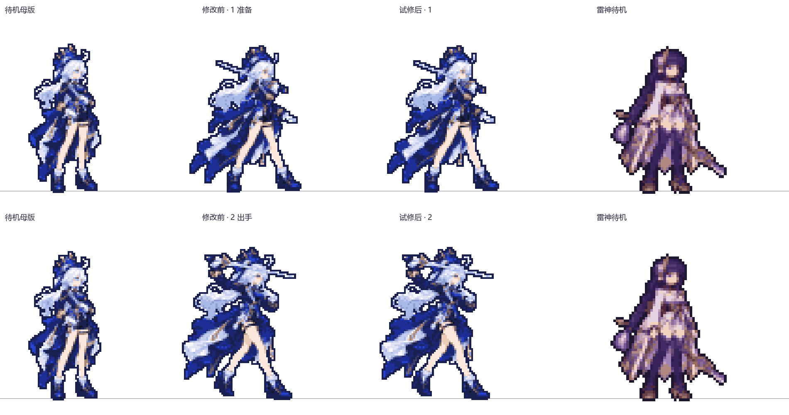
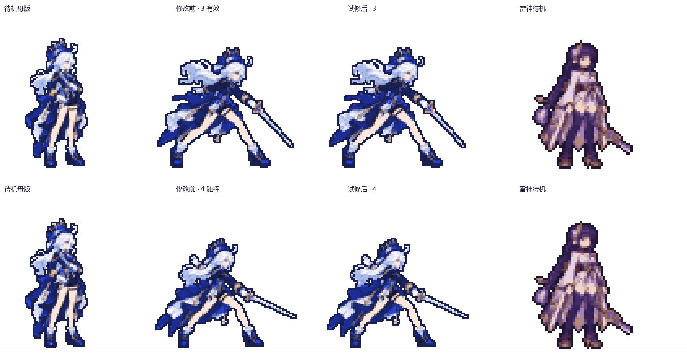
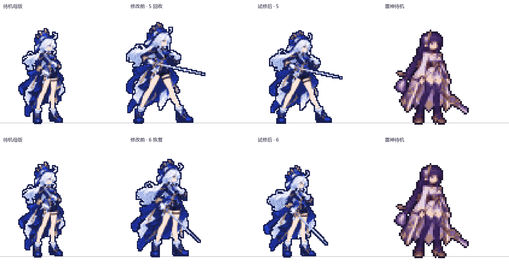
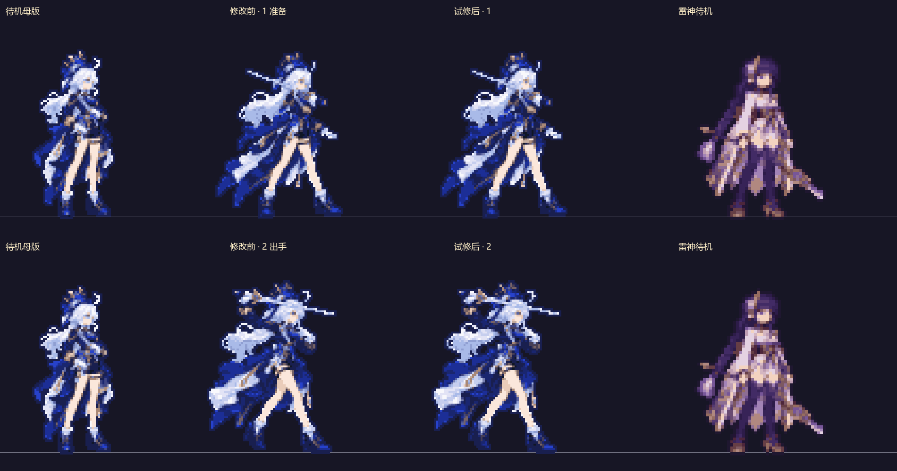
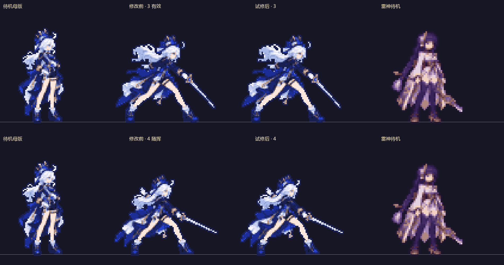
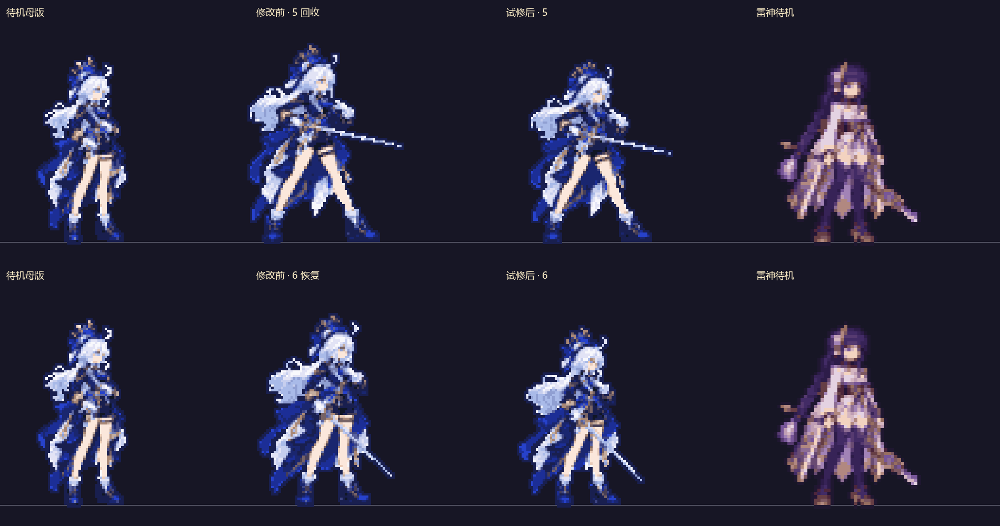

四列世界倍率1、同脚底线，不按单图外框缩放。仅第5/6显示状态改动，其余保留。手工投影测量不是美术验收；剑、帽和裙摆不参与人体倍率拟合。
| 显示帧 | 修改前：头/躯干/左腿/右腿估计偏差 | 试修后估计偏差 | 处理 |
|---|---|---|---|
| 1 准备 | +6.8% / +2.5% / +1.5% / -0.2% | 保留原状态 | 不据投影自动调整 |
| 2 出手 | +3.2% / -6.8% / +9.8% / +2.1% | 保留原状态 | 不据投影自动调整 |
| 3 有效 | +3.1% / -11.4% / +18.1% / +4.5% | 保留原状态 | 不据投影自动调整 |
| 4 随挥 | -7.2% / -19.6% / +0.5% / -2.1% | 保留原状态 | 不据投影自动调整 |
| 5 回收 | +3.7% / +9.5% / +10.3% / +14.7% | -4.0% / +1.4% / +2.1% / +6.2% | 倍率试修 |
| 6 恢复 | +2.5% / +19.6% / -3.4% / -8.3% | +5.2% / +0.0% / -7.3% / -7.6% | 源图返修候选 |
头6%、躯干8%、腿12%为本轮筛查带，不是既有美术标准或用户验收线。数据来自人工投影点，不能把转身、遮挡或屈膝当成确定的解剖错误。完整测量与前后数据





